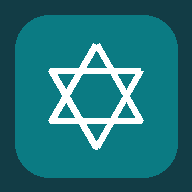

הוספת קיצור דרך ל־Chrome
Chrome לא מספק לאתרים אפשרות להוסיף קיצור דרך ישירות. יש לאשר בתפריט הדפדפן.
הקיצור צריך להיפתח בדפדפן Chrome, לא כאפליקציה עצמאית.
- פתח את הדף הזה ב־Chrome והקש על ⋮.
- בחר „הוספה למסך הבית” ואז „יצירת קיצור דרך” אם מופיעה אפשרות כזאת.
- אשר. מעכשיו הסמל יפתח דף בדפדפן, לא אפליקציה עצמאית.